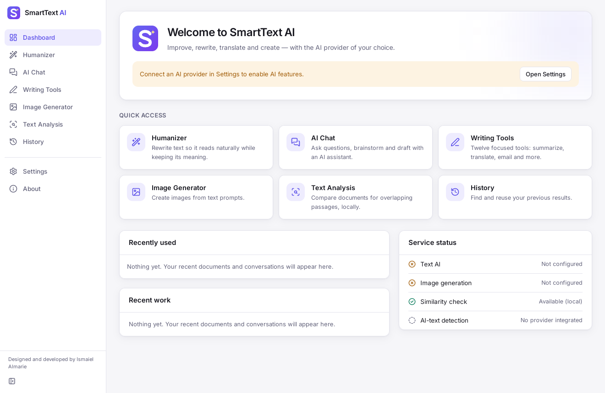
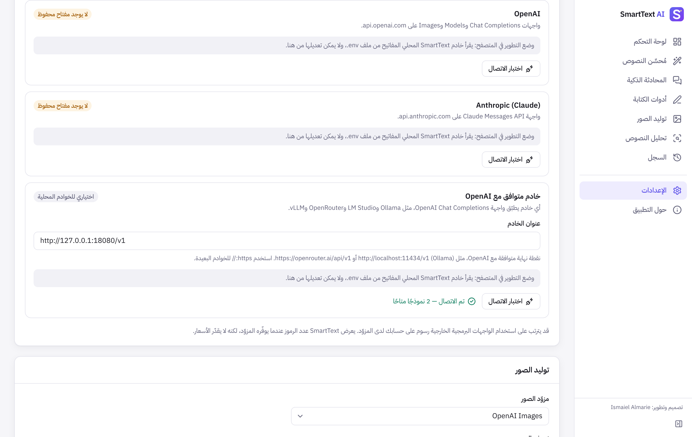

| المتطلب | macOS | Windows |
|---|---|---|
| إصدار النظام | 10.15 (Catalina) أو أحدث | Windows 10 الإصدار 1803 أو أحدث، أو Windows 11 |
| المعالج | Apple Silicon (M1 وما بعده) أو Intel | 64 بت (x64). أجهزة ARM و32 بت غير مدعومة |
| مساحة القرص | نحو 30 ميغابايت | نحو 30 ميغابايت، إضافة إلى WebView2 إن لم يكن مثبّتًا |
| مكوّنات إضافية | لا شيء | Microsoft Edge WebView2 (مدمج في Windows 11، ويُنزَّل تلقائيًا عند الحاجة) |
| الإنترنت | لازم لمزوّدي الذكاء الاصطناعي السحابيين، ولتنزيل WebView2 عند الحاجة | |
| مفتاح API | من OpenAI أو Anthropic، أو خادم محلي مثل Ollama لا يحتاج إلى مفتاح | |
| اسم الملف | لمن هو |
|---|---|
| SmartText-AI_1.0.0_aarch64.dmg | أجهزة Mac بمعالجات Apple Silicon |
| SmartText-AI_1.0.0_x64.dmg | أجهزة Mac بمعالجات Intel |
| SmartText-AI_1.0.0_x64-setup.exe | Windows: المثبّت الموصى به للمستخدم العادي، ويتيح اختيار العربية |
| SmartText-AI_1.0.0_x64_en-US.msi | Windows: حزمة MSI للنشر المؤسسي عبر أقسام تقنية المعلومات |
.dmg المناسب لجهازك، فتُفتح نافذة فيها أيقونة التطبيق ومجلد Applications.النسخ غير الموقّعة وغير الموثّقة من Apple يمنعها نظام Gatekeeper عند فتحها أول مرة، برسالة مثل «لا يمكن فتح SmartText AI لأنه لا يمكن التحقق من المطوّر». جرّب إحدى الطرق الآتية بالترتيب:
xattr -dr com.apple.quarantine "/Applications/SmartText AI.app"
هذه التحذيرات لا تظهر في النسخ الموقّعة بشهادة Developer ID والموثّقة من Apple.
عند حفظ مفتاح API لأول مرة قد يسألك macOS عن السماح لـ SmartText AI باستخدام سلسلة المفاتيح. أدخل كلمة مرور جهازك واختر السماح دائمًا، حتى لا يتكرر السؤال عند كل طلب.
أغلق التطبيق، ثم ثبّت ملف .dmg الجديد بالطريقة نفسها، واختر استبدال عندما يسألك Finder. تبقى إعداداتك وسجلك ومفاتيحك كما هي.
~/Library/Application Support/com.ismaielalmarie.smarttextai
com.ismaielalmarie.smarttextai واحذف العناصر الظاهرة.SmartText-AI_1.0.0_x64-setup.exe.حزمة SmartText-AI_1.0.0_x64_en-US.msi مخصّصة للنشر في المؤسسات عبر أدوات مثل Group Policy أو Intune. واجهة مثبّتها بالإنجليزية فقط، أما التطبيق نفسه فيدعم العربية كاملة. ويمكن تثبيتها بصمت من سطر الأوامر:
msiexec /i "SmartText-AI_1.0.0_x64_en-US.msi" /qn
قد تظهر رسالة «Windows protected your PC» عند تشغيل مثبّت غير موقّع رقميًا. اضغط More info (مزيد من المعلومات)، ثم Run anyway (التشغيل على أي حال). التوقيع الرقمي للمثبّت يزيل هذا التحذير تدريجيًا مع بناء السمعة لدى Microsoft.
أغلق التطبيق، ثم شغّل مثبّت الإصدار الجديد؛ فيستبدل الإصدار القديم مع الإبقاء على إعداداتك وسجلك ومفاتيحك.
%APPDATA%\com.ismaielalmarie.smarttextai
com.ismaielalmarie.smarttextai.تُفتح لوحة التحكم مباشرة بعد التثبيت، والواجهة بالإنجليزية افتراضيًا. افتح Settings من الشريط الجانبي، ثم من قسم General اختر العربية من قائمة Interface language، فتنقلب الواجهة إلى العربية من اليمين إلى اليسار فورًا.


بعد ذلك تصبح كل الميزات جاهزة. وللتفاصيل الكاملة عن استخدام كل قسم راجع دليل استخدام SmartText AI.
لا يمكن بناء ملفات macOS وWindows إلا على أجهزة بهذين النظامين. أسهل طريقة هي GitHub Actions، فهو يبنيها مجانًا على أجهزة Mac وWindows سحابية دون أن تحتاج إلى أي منهما.
smarttext-ai-source.zip).v1.0.0، ثم اضغط زر التشغيل الأخضر.INSTALL_MACOS.md. وتوقيع Windows يحتاج إلى شهادة توقيع برمجيات، والتفاصيل في INSTALL_WINDOWS.md.ثبّت أدوات Xcode للأوامر وRust وNode.js 22، ثم نفّذ داخل مجلد المشروع:
xcode-select --install curl --proto '=https' --tlsv1.2 -sSf https://sh.rustup.rs | sh rustup target add aarch64-apple-darwin x86_64-apple-darwin npm ci npm run tauri build -- --target aarch64-apple-darwin # Apple Silicon npm run tauri build -- --target x86_64-apple-darwin # Intel npm run tauri build -- --target universal-apple-darwin # one app for both
ستجد ملف .dmg في المجلد src-tauri/target/<target>/release/bundle/dmg/.
ثبّت Microsoft C++ Build Tools (حزمة «Desktop development with C++»)، ثم نفّذ في PowerShell:
winget install --id Rustlang.Rustup rustup default stable-msvc winget install OpenJS.NodeJS.LTS npm ci npm run tauri build
ستجد الملفين في src-tauri\target\release\bundle\nsis\ وsrc-tauri\target\release\bundle\msi\.
| المشكلة | السبب المحتمل | الحل |
|---|---|---|
| macOS: «لا يمكن التحقق من المطوّر» | النسخة غير موقّعة أو غير موثّقة | افتح التطبيق بالنقر الأيمن ثم «فتح»، أو من الخصوصية والأمان ← «فتح على أي حال». |
| macOS: «التطبيق تالف ولا يمكن فتحه» | علامة الحجر على ملف غير موقّع | نفّذ أمر xattr الوارد في الفصل الثاني. |
| macOS: التطبيق لا يعمل أو بطيء جدًا | نسخة لا تطابق معالج الجهاز | ثبّت ملف aarch64 لأجهزة Apple Silicon، وملف x64 لأجهزة Intel. |
| macOS: يتكرر طلب كلمة المرور عند كل طلب | اختيار «السماح» بدل «السماح دائمًا» | اختر «السماح دائمًا» في نافذة سلسلة المفاتيح التالية. |
| Windows: «Windows protected your PC» | المثبّت غير موقّع | More info ← Run anyway. |
| Windows: نافذة بيضاء فارغة | WebView2 غير مثبّت أو تالف | نزّل «Microsoft Edge WebView2 Runtime» من موقع Microsoft وثبّته، أو أصلحه من التطبيقات المثبّتة. |
| Windows: فشل تنزيل WebView2 أثناء التثبيت | لا يوجد اتصال بالإنترنت أو يحجبه جدار حماية | اتصل بالإنترنت وأعد التشغيل، أو ثبّت WebView2 يدويًا أولًا. |
| Windows: فشل تثبيت MSI | سياسات النظام أو صلاحيات غير كافية | استخدم المثبّت setup.exe، أو شغّل MSI بصلاحيات المسؤول. |
| «هذا التطبيق لا يمكن تشغيله على جهازك» | Windows 32 بت أو ARM | هذه الأنظمة غير مدعومة في الإصدار الحالي. |
| «سلسلة مفاتيح النظام غير متاحة» عند حفظ المفتاح | سلسلة المفاتيح مقفلة أو الوصول إليها مرفوض | افتح قفلها ووافق على طلب الوصول، ثم أعد حفظ المفتاح. |
| فشل سير عمل GitHub Actions | خطأ في أسرار التوقيع أو إعدادات المستودع | افتح سجل المهمة الفاشلة. بدون أسرار التوقيع يُبنى التطبيق غير موقّع ولا يفشل. |